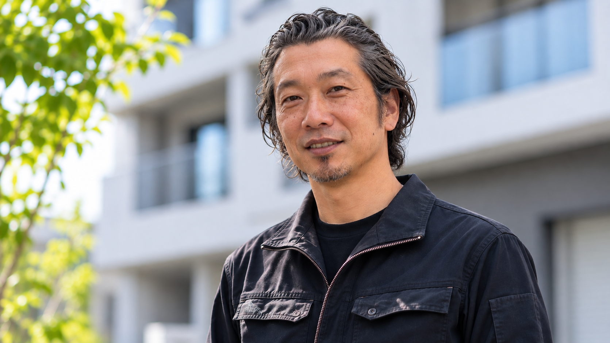

REPRESENTATIVE
代表紹介

※掲載写真は代表ご本人の写真をもとにしたAI生成イメージです。
SATO KOGYO / REPRESENTATIVE
佐藤工業 代表
佐藤 伸由
Sato Nobuyoshi
大工歴27年2000年から現場に従事
受け継いだ仕事を、誠実に。
私は2000年から大工の仕事を始め、27年にわたり現場で経験を積んできました。親が一人親方として続けてきた仕事を受け継ぎ、現在は新築マンション・アパートの内装工事、リフォーム工事を中心に取り組んでいます。
昔から受け継いできた仕事だからこそ、技術だけでなく、現場での信頼関係や仕事への姿勢も大切にしています。
一つひとつの現場を丁寧に、そして誠実に。これからも、ご依頼いただくお客様や、一緒に働く職人さんとのご縁を大切にしながら、良い仕事を続けていきたいと考えています。